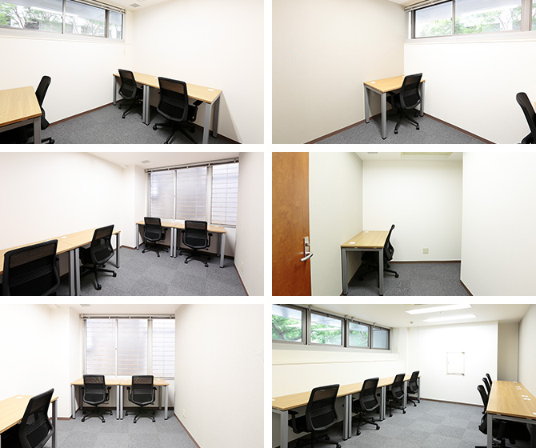

【個室レンタルオフィス】
オープンオフィス御堂筋
- オフィス詳細
- 周辺ガイド
オープンオフィス御堂筋は化学企業や貿易業など古くからの老舗企業が集まる大阪中央区淡路町のレンタルオフィス・コーキングスペースです。御堂筋線の淀屋橋駅3分・本町駅4分とどちらの駅からもアクセスが良い中間的な場所に位置し、支店・営業所、起業用、サテライトオフィスにも最適なワークスペースです。
オープンオフィス御堂筋が提供するオフィスサービス
-
 高速インターネット＜光ファイバー＞
高速インターネット＜光ファイバー＞
- 100Mbpsの光ファイバーによるブロードバンド環境をご用意しました。各部屋に配線済みですので、パソコンに繋げばすぐLAN経由で高速インターネットを利用出来ます。
-
 ネットワーク・カラーレーザープリンタ+スキャナー
ネットワーク・カラーレーザープリンタ+スキャナー
- ネットワークを利用して、各お部屋のパソコンから印刷できます。プリンタをご用意いただく必要もございません。
スキャナー機能も搭載しております。
-
 カラーレーザーコピー
カラーレーザーコピー
- フロア内にご用意してあります。カード方式でコピーが出来ますので、小銭の準備が不要です。
-
 ICカードキーによる入室管理
ICカードキーによる入室管理
- 専用ICカードを使ったホテル式のスマートシステムを用いて、セキュリティーを向上させています。
-
 ミーティングルーム（会議室）
ミーティングルーム（会議室）
- 商談・会議にご利用いただける共有スペースをご用意しています。インターネットで簡単に予約をしていただけます。
-
 無線LAN（WiFi）
無線LAN（WiFi）
- 共有スペースとミーティングスペースにて、無線LAN(WiFi)サービスをご利用いただけます。

オープンオフィス御堂筋の特徴

製薬会社・金融機関集まる大阪中央区のレンタルオフィス
淀屋橋駅・北浜駅より徒歩5分程度
関西主要エリアへ抜群のアクセス
大阪支店・営業所としても最適
起業時のオフィスにも最適
オフィス周辺のMap
オープンオフィス御堂筋の住所・アクセス
- 住所:
- 大阪市中央区淡路町3-5-13 創建御堂筋ビル 2F
- 電車からのアクセス:
- 大阪メトロ御堂筋線 淀屋橋駅 11番出口 徒歩3分
大阪メトロ御堂筋線 本町駅 2番出口 徒歩4分 - お車でのアクセス:
- 御堂筋を南方向に直進「平野町3」交差点左手。「淡路町３」の交差点手前

リージャスグループの説明
リージャス・グループは、柔軟なワークスペースを提供する世界最大の企業です。そのネットワークは世界120カ国1,100都市、3300拠点に及びます。会員数は250万人で、業界で成功を収める大小様々な企業や起業家の方々にご利用いただいています。
リージャスは、個室タイプのレンタルオフィス、コワーキングスペースなど多彩なオフィスプラン、近年需要が高まるモバイルワークやバーチャルオフィス、障害復旧サービスの提供を通じ、お客様が予算やワークスタイルに合わせて仕事を行うことができる環境を提供いたします。